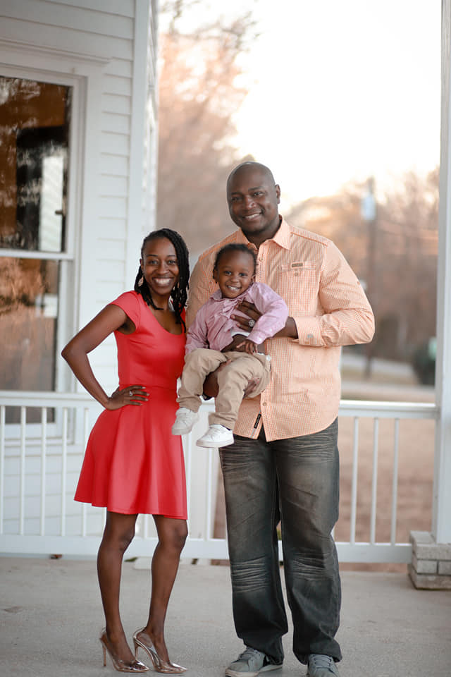
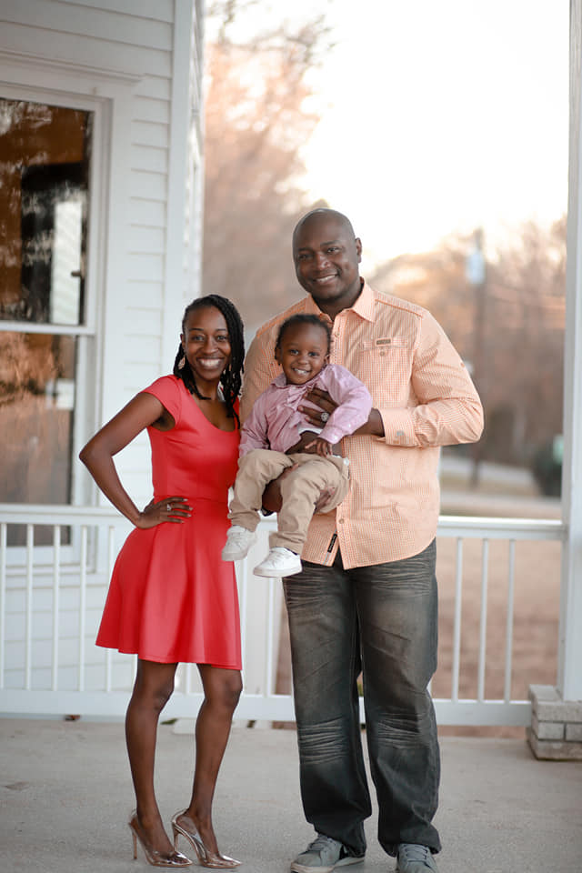

Interests
- Family
- My Family is what keeps me going in life.
- My Wife of 6 years, Miracleous Seays, is an Actress, Singer, Author, Podcast and Youtuber
- My 4 year old Son, NaDario Seays jr (NJ), is a professional provocateur but is incredably adorable with it.
- Linux
- Started using Linux 10 year ago.
- Used every major Linux distro like Arch, Debian, OpenSuse, fedora, and Gentoo (I was looking for pain).
- I have 7 computers in my house and only one has Windows (emergencies only).
- Favorite Distro is NixOS - for being able to configure the entire box with one config file, but not practical at the moment.
- Currently using PopOS - Not the best but has been very solid with minor issues
- Music
- Listen mostly to Rock, 80s and 90s hiphop, 50s to 90s Soul / R&B.
- Favorite Oldies Artists are: Al Green, The Dramatics, The O'Jays, Bobby Womack, The Isley Brothers, Curtis mayfield, Gladys Knight & the Pips, Otis Redding, etc...
- Favorite Rock Bands
- Play Guitar (learning) and Chromatic Harmonica.
- Physics
- Astronomy
- Masonry
- CAD
- Baltimore Ravens Football


 



Occupations
- US. Marine: radio operator
- Warehouse Associate: Texas Pipe and Supply
- Warehouse Manager: Texas Pipe and Supply
- Tech Support: TexasPipe and Supply
- General Claims Associate: Progressive
- SkillStormer: SkillStorm


Hobbies
- 3D Printing
- Masonry
- CAD